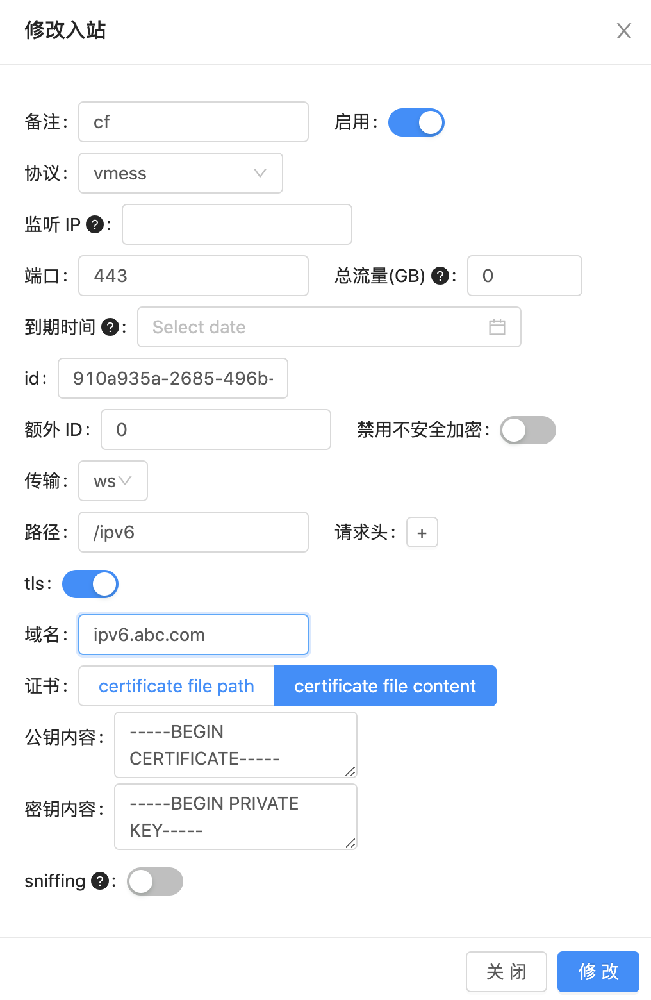

用这个方法也可以解决IP地址被封的问题，前提是能连接VPS的SSH，用梯子或者用主机厂商的Web SSH就行，虽然有时候不能复制粘贴得一个个手敲。
安装X-ui面板
一键安装脚本
1 | bash <(curl -Ls https://raw.githubusercontent.com/vaxilu/x-ui/master/install.sh) |
手动安装
- 首先从 https://github.com/vaxilu/x-ui/releases 下载最新的压缩包，一般选择 amd64架构
- 然后将这个压缩包上传到服务器的 /root/目录下，并使用 root用户登录服务器
1
2
3
4
5
6
7
8
9
10cd /root/
rm x-ui/ /usr/local/x-ui/ /usr/bin/x-ui -rf
tar zxvf x-ui-linux-amd64.tar.gz
chmod +x x-ui/x-ui x-ui/bin/xray-linux-* x-ui/x-ui.sh
cp x-ui/x-ui.sh /usr/bin/x-ui
cp -f x-ui/x-ui.service /etc/systemd/system/
mv x-ui/ /usr/local/
systemctl daemon-reload
systemctl enable x-ui
systemctl restart x-ui
修改登录端口及管理用户名密码
调出管理命令菜单x-ui根据显示的命令进行操作
登陆X-ui后台
访问http://vps_ip:面板端口
注册域名
- 白嫖的
免费的域名注册 https://freenom.com/ ，这个注册很讲究，没有直接注册页面，需要先选择域名，再接下来的加入购物车用邮箱验证来注册。使用gmail邮箱，注册信息地址与IP对应，安装chrome插件后，才注册成功。 - 剁手的
收费的域名注册 https://www.namesilo.com/
CloudFlare
注册CloudFlare
访问 https://www.cloudflare.com/ 注册账号并登录
添加网站
- 添加注册的域名
- 要使用Cloudflare，请确保已更改权威DNS服务器或名称服务器。这些服务器是分配的Cloudflare名称服务器。将两个格式为
*.ns.cloudflare.com的Cloudflare名称服务器添加到注册域名的NameServers。以freenom为例，如下图：

创建A、AAAA记录
DNS - 添加记录，A记录对应ipv4地址，AAAA记录对应ipv6地址

创建客户端证书
如果DNS记录里面设置的为已代理，那么用到的证书就是CloudFlare这里生成的。
在SSL/TLS里面设置加密模式为完全

点击CloudFlare中添加的域名网站 - SSL/TLS - 客户端证书 - 创建

保存生成的客户端证书、私钥

配置V2ray服务
进入X-ui面板后台，入站列表 - “ + ”新增节点，填入各项信息，粘贴在CloudFlare生成的证书和私钥。添加完成后，点击“查看” - “复制链接”导入到V2ray客户端即可使用
除了VMESS，还可以添加其它协议的节点。